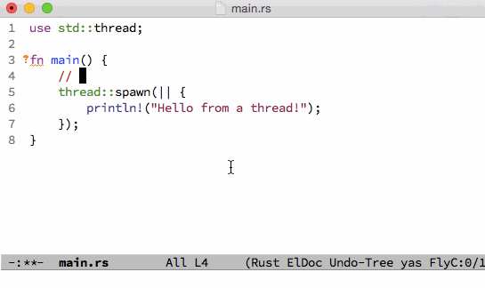

Emacs
本节介绍 Emacs (Version 24) 的 Rust 配置，假设你已经安装好了 Emacs，并且有使用 Emacs 的经验。具体的安装和使用说明，见网上相关文档，在此不赘述。
另外，本节的例子是在 Mac OS 上，在 Linux 上面基本一样。
Windows的Emacs用户仅作参考。
简介
Emacs 的 rust-mode 提供了语法高亮显示和 elisp 函数，可以围绕 Rust 函数定义移动光标。有几个插件提供了附加的功能，如自动补全和动态语法检查。

安装插件
首先，需要将 melpa 代码库添加到你的插件列表中，才能安装 Rust 需要的插件。将下面的代码片段加入你的~/.emacs.d/init.el 文件中。
;; Add melpa repository to archives
(add-to-list 'package-archives
'("melpa" . "http://melpa.milkbox.net/packages/") t)
;; Initialize packages
(package-initialize)
运行下面的命令，更新插件列表。
- M-x eval-buffer
- M-x package-refresh-contents
然后，就可以安装插件，在 Emacs 中使用 Rust 了。运行 M-x package-list-packages，用 i 标记下述插件进行安装，当所有的插件选择好了之后，用 x 执行安装。
- company
- company-racer
- racer
- flycheck
- flycheck-rust
- rust-mode
将下面的代码片段加入你的~/.emacs.d/init.el 文件：
;; Enable company globally for all mode
(global-company-mode)
;; Reduce the time after which the company auto completion popup opens
(setq company-idle-delay 0.2)
;; Reduce the number of characters before company kicks in
(setq company-minimum-prefix-length 1)
;; Set path to racer binary
(setq racer-cmd "/usr/local/bin/racer")
;; Set path to rust src directory
(setq racer-rust-src-path "/Users/YOURUSERNAME/.rust/src/")
;; Load rust-mode when you open `.rs` files
(add-to-list 'auto-mode-alist '("\\.rs\\'" . rust-mode))
;; Setting up configurations when you load rust-mode
(add-hook 'rust-mode-hook
'(lambda ()
;; Enable racer
(racer-activate)
;; Hook in racer with eldoc to provide documentation
(racer-turn-on-eldoc)
;; Use flycheck-rust in rust-mode
(add-hook 'flycheck-mode-hook #'flycheck-rust-setup)
;; Use company-racer in rust mode
(set (make-local-variable 'company-backends) '(company-racer))
;; Key binding to jump to method definition
(local-set-key (kbd "M-.") #'racer-find-definition)
;; Key binding to auto complete and indent
(local-set-key (kbd "TAB") #'racer-complete-or-indent)))

配置 Racer
Racer 需要 Rust 的源代码用于自动补全。
- git clone https://github.com/rust-lang/rust.git ~/.rust
- 重新启动 Emacs 并打开一个 Rust 源代码文件。

结论
现在，可以在 Emacs 中编辑 Rust 源代码文件了。功能总结如下：
- 语法高亮显示和自动缩进
- 自动补全
- 动态语法错误检查
- 跳转到函数定义
- 内嵌文档

注释
- 本节的内容适用于 Emacs Version 24；版本 23 的配置方法不同；版本 22 及以下不支持。
- MacOS 自带的 Emacs 版本是 22，版本 24 可以从这里下载。